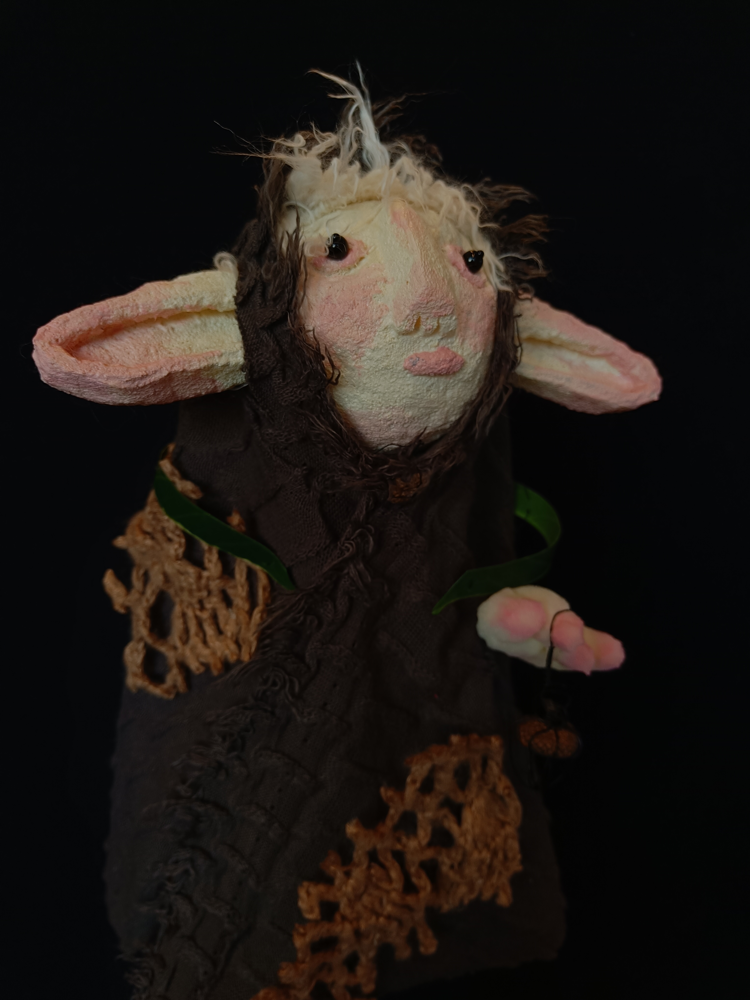
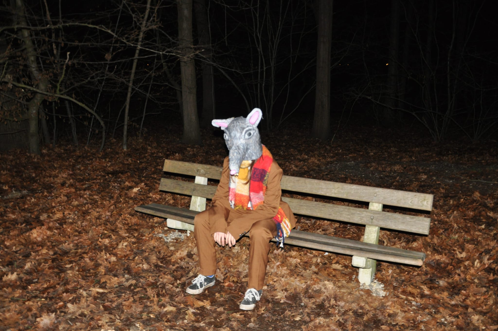

Ik ben Rosa van den Goor. Ik ben 20 jaar en studeer Fashion Design op de HKU, alhoewel mijn portfolio uit veel meer bestaat dan alleen mode.
Ik hoe van textiel ambachten zoals vilten, spinnen, breien, zeefdrukken en borduren. Esthetiek speelt een belangerijke rol in mijn werk.
Ik geloof dat je door middel van esthetiek een verhaal kan vertellen, een gevoel over kan brengen. Ik hou van ambachten omdat ik ervan hou
dat je kan zien dat er een menselijke hand aan te pas is geweest. Dat er tijd en aandacht aan is besteed vind ik altijd enorm indrukwekkend om te zien.
De Kop en de Staart - een korte film

Biologisch Afbreekbaar - een project over het leven verteld via schapenwol

Mijn schetsboekje van 2024 - ik in beeld
kriebelpanty (ook te koop!)
Poppen van een poppen seminar + een filmpje

Fotoshoot - een esthetisch onderzoek

Aderen, botten en huid - het ontzichtbare zichtbaar gemaakt

Rat en Duif - een fotoshoot

Clo3D - experimenteren
Beschimmelde aardbei - een fotoshop experiment
Contact
Contacteer mij voor vragen, antwoorden of gewoon om even contact te maken. Ik hoor graag van je!
Email: kriebelpanty@protonmail.com
Instagram: @rosas.kunst
De Kop en de Staart - een korte film
Binnenkort meer informatie!
Biologisch Afbreekbaar - een project over het leven verteld via schapenwol
Geinspireerd door de manier waarop schimmel groeit, altijd zoekend naar wegen die af te leggen zijn, heb ik een stop motion filmpje gemaakt. Met vezels van Nederlandse schapenwol die met elkaar verstrengeld zijn, door het spinnen en vilten ervan. Net als schimmels is ons leven constant in beweging. We waren, zijn en zullen altijd deel zijn van het onbegrensde bestaan.
Met Bo Lemmens als model.
Met Bo Lemmens als model.


Ik begon met het verwerken van de wol: Wassen - verven - kaarden - spinnen of vilten.
Toen ben ik op een paspop gaan mouleren en heb me door het materiaal laten leiden.


Mijn schetsboekje van 2024 - ik in beeld


kriebelpanty
Een insecten panty om lekker mee in het gras te liggen, tussen je maatjes. Mail of DM mij om een bestelling te doen! Ze zijn €23 per stuk en in de maten S M en L verkrijgbaar. Gemaakt door mij!
Poppen van een poppen seminar + een filmpje
Wezens maken uit schuim, gekleurd met pastelkrijtjes; schuim bedekt met latex voor een huid-achtig uiterlijk; uit bakpapier met houtlijm bij elkaar gehouden en van stukken katoen, over een mal van kranten, met witte lijm bij elkaar gehouden.



Een filmpje als afsluiter van de seminar, met een groepje hebben we een wereld gemaakt waarin onze poppen tot leven komen. Waar goed en kwaad aanwezig zijn.
Fiskeri
Fiskeri
Fotoshoot - een esthetisch onderzoek
Experimenteren met kleur en beeld. Ik wilde foto's maken die een samenhang krijgen door middel van kleur en esthetiek. Een gevoel van rust waar het onheilspellende toch op de loer ligt. Geen vals gevoel van rust, maar juist rust omdat ook het tegenovergestelde bestaat.

Aderen, botten en huid - het ontzichtbare zichtbaar gemaakt
Systemen in je lichaam die constant met elkaar in contact staan.


Ik vergeet wel eens dat ik een lichaam heb die bestaat uit allerlei bacterien en cellen die hun best doen om in leven te blijven, dus heb ik voor mezelf en
anderen een herinnering gemaakt aan het lichaam. Vergeet er niet voor te zorgen en vergeet niet af en toe die bacterien te bedanken.
Met Michiel van den Goor als model.
Met Michiel van den Goor als model.


Rat en Duif - een fotoshoot
Het uitschot van het dierenrijk, dat is vaak hoe de rat en de duif worden gezien.
'Duiven zijn de ratten van de lucht'
Maar ook ratten en duiven hebben hun eigen leventje, zoals Rat en Duif hier laten zien. Ook zij doen een sjaal om in de winter, net als jij.
Lotte Roquas heeft Duif tot leven gebracht en ik heb Rat tot leven gebracht.
'Duiven zijn de ratten van de lucht'
Maar ook ratten en duiven hebben hun eigen leventje, zoals Rat en Duif hier laten zien. Ook zij doen een sjaal om in de winter, net als jij.
Lotte Roquas heeft Duif tot leven gebracht en ik heb Rat tot leven gebracht.



Meer foto's zullen volgen!
Clo3D - experimenteren
Clo3D is een programma waarmee je kleding kan maken in een digitale omgeving.


Beschimmelde aardbei - een fotoshop experiment
Een foto van een beschimmelde aardbei gemanipuleerd tot kleding. Dit was een experiment om uit te proberen op welke manieren je allemaal een foto kunt bewerken in fotoshop. Dit heeft geleid tot een serie aan Strawberry Moldcakes.